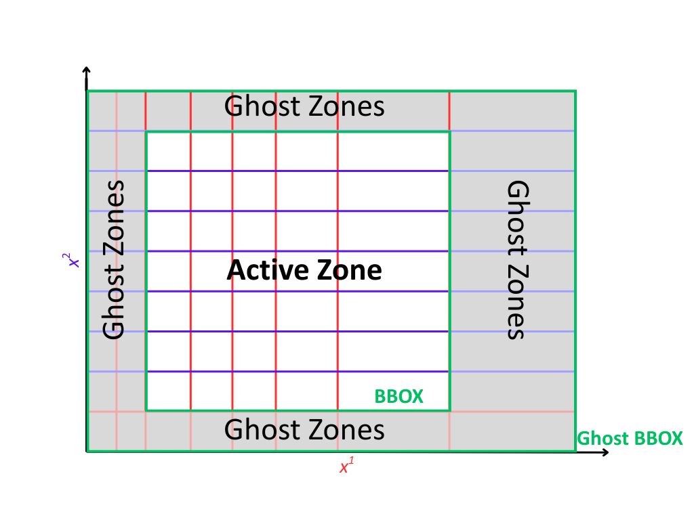

Geometric Grids: General Info#
Geometric grids in PyMetric form the spatial backbone for all data fields and computations. A grid is a combination
of a generic grid structure and a coordinate system (coordinates). This design allows users to precisely map data to physical
space, manage boundary conditions with ghost zones, and leverage efficient chunked operations on large domains.
Overview#
The grids module provides the spatial infrastructure for all field-based computations
in PyMetric. Grids define how a physical domain is discretized into a structured layout of
points or cells and enable consistent mappings between coordinate systems,
numerical data, and differential operations.
At its core, a grid consists of two key components:
A grid structure (e.g.,
UniformGrid,GenericGrid) that determines how grid points are arranged and accessed.A coordinate system (see
coordinates) that maps grid indices to physical space and provides metric-aware geometry for differential operations.
This separation of concerns enables highly flexible and extensible representations of space, from simple Cartesian domains to complex curvilinear coordinates or non-uniform meshes. Regardless of grid type, PyMetric provides a unified interface for spatial indexing, coordinate retrieval, chunked operations, and grid-aware interpolation.
All grid types inherit from the abstract GridBase,
which defines the standard API for all grid operations. This ensures that your code can
remain backend-agnostic while still taking full advantage of specialized behaviors from subclasses.
Types of Grids#
PyMetric supports multiple grid classes that implement the same abstract
interface (GridBase) but differ in how they discretize
space. The two primary grid types currently available are:
GenericGrid— supports arbitrarily spaced coordinates (non-uniform grids).UniformGrid— optimized for domains with regularly spaced grid points.
Each is suited to different application needs, and their underlying data representations reflect trade-offs between flexibility and efficiency.
The GenericGrid is the most flexible grid structure
in PyMetric. It allows you to define each axis by providing a 1D
NumPy array of monotonically increasing coordinates. This makes it well-suited for:
Grids with non-uniform resolution, such as stretched meshes or log-scaled axes.
Domains with arbitrary point placement, such as observational grids or outputs from external simulations.
Any scenario where grid control or fidelity is more important than performance or simplicity.
Internally, a GenericGrid stores the full coordinate arrays for each axis.
This gives the user full control over spatial discretization at the cost of
slightly higher memory and computational overhead.
Tip
If you need to represent complex geometries or use different resolutions in different parts of the domain, this is the grid to use.
The UniformGrid is designed for simplicity and performance.
It represents a regular, Cartesian-like mesh defined by:
A bounding box — specifying the physical limits of the domain.
A domain shape — the number of points along each axis.
From these two pieces of information, the grid infers coordinate spacing
and generates points on-the-fly when needed. This design avoids storing
full coordinate arrays, making UniformGrid:
Very memory efficient, especially for large domains.
Ideal for stencil-based operations, finite-difference solvers, and image-like data.
Easy to use when a rectangular, uniformly spaced domain is sufficient.
If you do not need adaptive resolution or nonuniform axes, UniformGrid is typically the best starting point.
Note
Both grid types integrate seamlessly with the field and buffer systems in PyMetric. You can switch between grid types as needed depending on the demands of your problem.
Properties of Fields#
{kind=link}
Every grid in PyMetric exposes a consistent set of spatial properties that describe its structure, extent, and boundary behavior. These properties are critical for understanding how data maps onto the grid and how operations like interpolation, differentiation, and boundary handling behave.
The Bounding Box and Domain Dimensions#
The two most critical properties of any grid are its domain dimensions and its
bounding box. The domain dimension of a grid is the number of cells along each axis
of the grid. Each grid class implements this as dd.
The bounding box determines the physical boundary of the grid and is specified by
the position of the “bottom right” and “top left” corners of the domain. You can
access the bounding box of a grid using bbox
Hint
For a uniform grid, the bounding box and the domain dimension uniquely determine the size of each cell.
Ghost Regions#
Ghost regions are auxiliary buffer zones that wrap the physical domain of the grid. These zones are used to support numerical operations that require access to neighboring cells, such as:
Finite difference and finite volume stencils.
Boundary condition enforcement.
Interpolation and smoothing operations near edges.
In PyMetric, ghost zones are optional and explicitly configurable. When enabled, they expand the grid with additional cells on both the lower and upper sides of each axis. This creates a distinction between:
The active domain: the region over which computations and physical data are defined.
The global domain: the active domain plus ghost zones.
Ghost zones are defined via the attribute ghost_zones,
which is a (2, ndim) array indicating how many ghost cells to place on each side of each axis.
The full shape of the grid, including ghosts, is given by gdd (ghost domain dimensions).
Likewise, the physical extent including ghosts is described by gbbox (ghost bbox).
Note
Ghost zones do not contribute to the grid’s bounding box bbox, which remains tied to the physical (active) region.
The bbox is always a subset of the gbbox.
How ghost zones are implemented depends on the grid type:
For UniformGrid, ghost zones are injected around the physical domain.
These ghost cells are positioned consistently with the internal spacing of the grid, extending
outward beyond the bounding box. This is ideal for regular Cartesian grids used in PDE solvers
or image processing.
The spacing and coordinate system are used to assign coordinates to ghost points.
Ghost cells lie outside the physical domain in real space.
The global domain expands in all directions accordingly.
Example:
grid = UniformGrid(csys, bbox, shape, ghost_zones=[[2, 2], [2, 2]])
print(grid.gdd) # Includes ghost cells
print(grid.dd) # Physical domain only
print(grid.gbbox) # Physical bounding box plus ghost extension
For GenericGrid, ghost zones are cut from the user-provided coordinate arrays.
In this model, you must supply coordinate arrays that are longer than the intended active domain
to accommodate the ghost cells explicitly. This is done because a generic grid has no way of “intuiting”
where to place the ghost cells without explicit instruction.
The coordinate arrays must contain values for both physical and ghost regions.
No extrapolation or spacing assumptions are made — control remains fully with the user.
The outer slices of the array are treated as ghost zones, and the core forms the physical domain.
Example:
# Suppose x has 10 points: 2 ghost on each end, 6 active
x = np.linspace(-0.2, 1.2, 10)
grid = GenericGrid(csys, [x], ghost_zones=[[2], [2]])
print(grid.dd) # 6
print(grid.gdd) # 10
Constructing Grids#
Each subclass of grids.base.GridBase has different syntax for creation, reflecting
the different behaviors and required information of different grid types. In general, a grid
requires a coordinate system (from coordinates) and then some specification of the grid
positions in that coordinate system.
Important
ALL grids span all of the axes of their coordinate system. In the fields module,
data can exist along only a particular axis slice of the grid, but the grid itself must provide
discretization for every dimension.
Basic Construction#
In the tabs below, we’ll explain the convention for creating grids for each of the standard grid types:
A UniformGrid is defined by:
A coordinate system instance (e.g., Cartesian, Cylindrical)
A bounding box (lower and upper physical edges)
The number of grid points (cells) along each axis
The coordinates are computed on-the-fly, and the grid requires only the bounding box and resolution.
from pymetric.coordinates import CartesianCoordinateSystem2D
from pymetric.grids import UniformGrid
csys = CartesianCoordinateSystem2D()
bbox = [[0.0, 0.0], [1.0, 1.0]] # [lower_bounds, upper_bounds]
shape = [100, 100] # number of cells per axis
grid = UniformGrid(
csys,
bbox,
shape,
ghost_zones=[[2, 2], [2, 2]] # 2 ghost zones on each side
)
Note
Ghost zones are added outside the physical bounding box for a UniformGrid.
That is, the physical domain remains exactly as specified in bbox, and ghost zones expand
the buffer beyond the domain.
A GenericGrid is defined by:
A coordinate system
Explicit coordinate arrays (1D arrays per axis)
These arrays represent either the cell centers or grid vertices, depending on the center argument. If center=’vertex’, no bounding box is needed. If center=’cell’, the bbox must be provided to define the edges.
from pymetric.coordinates import CartesianCoordinateSystem2D
from pymetric.grids import GenericGrid
import numpy as np
csys = CartesianCoordinateSystem2D()
x = np.linspace(0.0, 1.0, 100)
y = np.linspace(0.0, 2.0, 200)
grid = GenericGrid(
csys,
[x, y],
center='cell',
bbox=[[0.0, 0.0], [1.0, 2.0]],
ghost_zones=[[2, 2], [2, 2]]
)
Note
For GenericGrid, ghost zones are cut from within the provided coordinate arrays.
The bounding box of the physical domain is shrunk inward, and the coordinate values at the edges
are interpreted as the full ghost-inclusive domain.
Hint
If your coordinates represent vertex points, set center='vertex' and omit the bounding box.
The grid will automatically derive the physical domain by slicing off ghost zones at the edges.
Setting up Chunking#
Chunking is an optional feature that divides the grid into regularly sized subdomains, or “chunks”. This is useful for:
Memory-efficient block processing
Parallelization across chunks
Defining update stencils and halo operations in localized regions
Important
Chunking is always based on the active domain (excluding ghost zones). Each chunk must evenly divide the number of active grid cells along each axis.
To enable chunking, specify the chunk_size keyword when constructing the grid:
from pymetric.coordinates import CartesianCoordinateSystem2D
from pymetric.grids import UniformGrid
csys = CartesianCoordinateSystem2D()
bbox = [[0, 0], [1, 1]]
shape = [100, 100] # active grid shape (no ghosts)
grid = UniformGrid(
csys,
bbox,
shape,
chunk_size=[25, 25], # splits into 4x4 chunks
ghost_zones=[[2, 2], [2, 2]]
)
Note
Chunking does not affect the physical layout or coordinate values. It only partitions the grid into internal subregions for computational and data management purposes.
Hint
You can inspect chunking-related attributes using:
chunking→ True or Falsechunk_size→ shape of each chunk (e.g., [25, 25])cdd→ number of chunks per axis (chunk domain dimensions)
Cell Centered vs. Vertex Centered Grids#
All grids in PyMetric may be constructed in one of two centering modes:
Cell-Centered (center=’cell’):
Coordinates represent the center of each computational cell.
The number of coordinates equals the number of cells.
Requires a bounding box (bbox) to define the outer physical edges.
Common in finite-volume or control-volume methods.
Vertex-Centered (center=’vertex’):
Coordinates represent the edges or vertices between cells.
The number of coordinates is one more than the number of cells.
No bounding box is required; it is inferred from the vertex values.
Useful for spectral, finite-difference, or interpolation-heavy use cases.
You select the centering mode at construction using the center= keyword (default is ‘vertex’):
grid = GenericGrid(
csys,
[x, y],
center='vertex', # or 'cell'
ghost_zones=[[2, 2], [2, 2]],
)
Hint
The attribute centering() reflects whether the grid is cell- or vertex-centered.
Note
Understanding the centering convention is critical for aligning data, especially when computing differential operators or interpolating between grid-based quantities.
Using PyMetric Grids#
In the previous section, the classes of grids were introduced and
the details of creating them were covered. In this section, we’ll look at some
of the capabilities of PyMetric grids.
In general, the most important function of PyMetric grids is to provide a backend
for the higher level classes of fields; however, these grids are often of
use on their own.
Extracting Coordinates#
Once a grid has been constructed, PyMetric provides a consistent and flexible API for retrieving spatial coordinate values from the grid. Generically, 2 representations for coordinates are supported:
coordinates: When a method refers to generating “coordinates,” this generally refers to producing a sequence of 1D arrays containing coordinate points along each axis of the grid.
meshes: When a method refers to a “mesh,” this generally to producing a sequence of ND arrays containing a full coordinate meshgrid for each axis. This is similar to
numpy.meshgrid().
In addition, coordinates can be extracted from both the full domain of the grid and from particular chunks. PyMetric also allows users to fine tune the behavior of these procedures to include (or exclude) ghost zones, support uniform “halos” around a particular region, and various others.
Important
Coordinate extraction always follows logical axis order as defined by the coordinate system, not NumPy memory layout. For Cartesian 2D, this is typically:
x → axis 0
y → axis 1
This means that compute_domain_coords() returns (x, y), where x.shape = (nx,) and y.shape = (ny,).
When plotting, transpose field data if needed for alignment:
plt.imshow(field.T, extent=(x[0], x[-1], y[0], y[-1]))
Coordinates on the Full Grid#
To start, let’s look at extracting the coordinates for the entire domain of
a grid. This is accomplished using the compute_domain_coords() and compute_domain_mesh():
from pymetric.coordinates import CartesianCoordinateSystem2D
from pymetric.grids import UniformGrid
import matplotlib.pyplot as plt
import numpy as np
csys = CartesianCoordinateSystem2D()
bbox = [[0.0, 1.0], [0.0, 1.0]] # [lower_bounds, upper_bounds]
shape = [100, 100] # number of cells per axis
grid = UniformGrid(
csys,
bbox,
shape,
ghost_zones=[[2, 2], [2, 2]] # 2 ghost zones on each side
)
X,Y = grid.compute_domain_mesh()
R = np.sqrt(X**2 + Y**2)
Z = np.sin(10*R)
plt.imshow(Z)
plt.show()
(Source code, png, hires.png, pdf)
{kind=link}
{kind=link}
For most general operations, these methods provide the easiest access point for performing a computation on a grid.
Coordinates on Chunks#
In chunked grids, you often want to extract coordinate arrays specific to a single chunk (or a subset of chunks). This enables efficient block-wise computation, boundary-localized operations, and tiled memory access patterns for large datasets.
To extract coordinates for a given chunk, use:
compute_chunk_coords()— returns 1D coordinate arrayscompute_chunk_mesh()— returns full meshgrid coordinates
coords = grid.compute_chunk_coords(
chunks=[1, 2], # the chunk index (i.e. 2nd chunk along axis 0, 3rd along axis 1)
include_ghosts=True # include ghost cells around the chunk
)
X, Y = grid.compute_chunk_mesh(
chunks=[1, 2],
include_ghosts=True
)
You can also specify halo offsets, which add additional cells around each chunk beyond ghost zones:
coords = grid.compute_chunk_coords(
chunks=[1, 1],
halo_offsets=1 # one extra cell on each side (after ghost padding)
)
X, Y = grid.compute_chunk_mesh(
chunks=[1, 1],
halo_offsets=[[1, 1], [2, 2]]
)
Returned coordinate arrays are always aligned to the global domain, and are consistent with
the buffer layout returned from chunk-level accessors (like empty_like_chunks()).
Important
When computing coordinates for a chunk:
The chunk region is interpreted in global index space (including ghost zones).
Ghost and halo padding are applied after determining the base chunk bounds.
If the grid is vertex-centered, one extra index is added to include trailing vertices.
These default behaviors can be modified with specific kwargs passed to the relevant methods. See API documentation for more.
Performing Operations On Coordinates#
In most workflows, the best approach for working with grid coordinates is to extract them via the mesh or coordinate generation functions as described above. There are a few utilities which have built in support which we will summarize here.
The first of these is computing functions over the grid. This is performed using the compute_function_on_grid()
with the following syntax:
from pymetric import UniformGrid, CartesianCoordinateSystem2D
import matplotlib.pyplot as plt
import numpy as np
cs = CartesianCoordinateSystem2D()
bbox = [[0,1],[0,1]]
dd = [10000,10000]
grid = UniformGrid(cs, bbox, dd, chunk_size=(10,10),center='cell')
func = lambda x,y: np.sin(10*np.sqrt(x**2+y**2))
Z = grid.compute_function_on_grid(func,in_chunks=True)
plt.imshow(Z)
plt.show()
For more advanced computations over the grid, it usually suffices to simply extract the coordinates; however,
users may also take advantage of methods like A.iter_chunk_coords() to perform memory intensive operations in
chunks. See the chunking section below for more details.
Differential Geometry#
Hint
For low-level details and reference implementations, see differential_geometry.
Grids in PyMetric support direct computation of differential geometric operations, including gradients, divergences, and Laplacians, on structured domains. These methods build upon PyMetric’s coordinate-aware differential geometry engine and are designed to work seamlessly with both full-domain and chunked workflows.
Important
Differential geometry in PyMetric is organized into three layers of abstraction:
Low-level operations (
differential_geometry): Direct numerical methods requiring manual specification of coordinate arrays, metric tensors, and transformation terms.Grid-level operations (
grids): High-level APIs that automatically compute coordinate-dependent terms using the grid’s geometry and coordinate system.Field-level operations (
fields): Fully automated routines that handle axis alignment, symbolic dependence tracking, and term inference for derived fields.
As the intermediate layer, grids are ideal when you want more control than fields provide but without manually constructing all geometric data.
Setting Up Differential Computations#
To perform a differential operation at the grid level, you generally need to provide the following:
A field (field) — The data array on which the differential operation will be performed. This can be any NumPy-like array (does not need to be a Field object). You must also specify the axes of the grid that the field spans using the field_axes argument.
Note
field_axes is a list of logical axis names (e.g., [“x”, “y”]) that describe how the field maps onto the grid’s coordinate system. The axes must be consistent with the grid’s coordinate system.
An output axis specification (output_axes) — A list of axes that the result of the operation will span. In general, this should be a superset of field_axes. This accounts for the fact that many geometric operations (e.g., gradients) increase tensor rank or introduce new directional components.
For example, computing the gradient of a scalar field with field_axes=[“x”, “y”] might yield an output with output_axes=[“x”, “y”, “r”], where “r” indexes the coordinate directions.
Most differential methods also support the following optional keyword arguments:
in_chunks(bool): Whether to compute the result one chunk at a time, useful for large domains.edge_order(int): Numerical stencil order used for computing finite differences (usually 1 or 2).pbar(bool): Whether to show a progress bar when chunking is enabled.out(array, optional): Pre-allocated output array to store the result.output_element_shape(tuple, optional): The shape of the tensor component at each grid point.
These options allow fine-tuned control over memory usage, numerical accuracy, and parallelization behavior. See the method-level documentation for more details on inputs and behavior. A full list of supported operations is provided below in this section. As an example, the gradient in cartesian coordinates might look like
from pymetric import UniformGrid, CartesianCoordinateSystem2D
import matplotlib.pyplot as plt
import numpy as np
# Build the coordinate system
# and the grid.
cs = CartesianCoordinateSystem2D()
bbox = [[-1,1],[-1,1]]
dd = [1000,1000]
grid = UniformGrid(cs, bbox, dd,
chunk_size=(10,10),
center='cell')
# Generate the function Z(X,Y).
func = lambda x,y: np.sin(10*np.sqrt(x**2+y**2))
Z = grid.compute_function_on_grid(func)
# Compute the covariant gradient.
gradZ = grid.dense_covariant_gradient(Z,['x','y'])
# Plot the x and y components.
fig,axes = plt.subplots(1,3,figsize=(10,4),sharex=True,sharey=True)
axes[0].imshow(Z.T,extent=(-1,1,-1,1),cmap='inferno')
axes[1].imshow(gradZ[...,0].T,extent=(-1,1,-1,1),cmap='inferno')
axes[2].imshow(gradZ[...,1].T,extent=(-1,1,-1,1),cmap='inferno')
plt.show()
(Source code, png, hires.png, pdf)
{kind=link}
{kind=link}
Interpolation#
Grids in PyMetric provide built-in support for fast, local interpolation over either the full domain or individual chunks. This is useful for evaluating continuous functions from discrete field data, implementing semi-Lagrangian schemes, sampling initial conditions, or querying solution values at arbitrary coordinates.
Interpolation in PyMetric is powered by SciPy’s scipy.interpolate.RegularGridInterpolator, wrapped
in a grid-aware API that handles coordinate extraction and axis alignment automatically.
To build an interpolator over the entire active domain of the grid, use construct_domain_interpolator():
interpolator = grid.construct_domain_interpolator(
field, # array shaped according to field_axes
field_axes, # e.g., ["x", "y"]
method="linear", # or "nearest"
bounds_error=False,
fill_value=np.nan
)
This returns a callable object that can be used like:
# Evaluate at a batch of (x, y) points
points = np.array([[0.1, 0.2], [0.5, 0.7]])
values = interpolator(points)
The field_axes argument must match the ordering of dimensions in field, and those axes must align with the grid’s coordinate system.
Note
The interpolator operates in physical coordinates (e.g., meters, centimeters) — not index space. You must provide real-space locations for evaluation.
To create an interpolator for a specific region of the grid (a “chunk”), use construct_chunk_interpolator():
interpolator = grid.construct_chunk_interpolator(
field_chunk, # array sliced to match the chunk
field_axes, # e.g., ["x", "y"]
chunks=[1, 2], # chunk index along each axis
include_ghosts=True, # include ghost zones if needed
halo_offsets=[1, 1], # optional halo padding
method="linear"
)
This is ideal for distributed, tiled, or stencil-based algorithms that operate on chunked regions of the domain. The interpolation region automatically accounts for ghost zones and halos.
Hint
The field_chunk must already be sliced to match the shape of the specified chunk region,
including any ghost or halo padding. Use compute_chunk_slice()
and field[chunk_slice] to extract it.
Units and Unit Systems#
PyMetric grids support unit-aware metadata for spatial dimensions, allowing users to attach
physical units (e.g., "cm", "m", "rad") to each coordinate axis of a grid. This metadata is used
to define a consistent internal unit system, which is available for inspection and integration
into downstream operations, such as:
Unit-aware field creation or evaluation
Differential operator scaling
Serialization and I/O
Visualization annotations
However, PyMetric does not enforce unit conversion or operate directly with `unyt` arrays inside the grid infrastructure itself. All numerical operations on grids are performed using plain NumPy arrays, with units treated as optional metadata.
Why This Matters#
This design provides a clean separation between physical interpretation and computational logic. It ensures that PyMetric grids remain:
Lightweight and efficient: Coordinates are stored and manipulated as raw NumPy arrays without the overhead of unit-tagged computation.
Flexible: Users can choose whether to operate in raw or unit-aware workflows without performance penalties.
Explicit and transparent: Units are always available to the user but are not silently applied in operations unless explicitly handled at a higher level (e.g., in
fields).
This allows PyMetric grids to work seamlessly with performance-critical applications (e.g., solvers, data ingestion, visualization) while still supporting scientific correctness when units are needed.
Accessing Units#
Each grid maintains two unit-related properties:
unit_system— a unyt.UnitSystem object defining base units (length, mass, time, etc.)axes_units— a list of unyt.Unit objects representing the unit of each coordinate axis
Example:
grid.unit_system
# → UnitSystem(name='_grid_units', length_unit=cm, time_unit=s, mass_unit=g, angle_unit=rad, ...)
grid.axes_units
# → [unyt.cm, unyt.cm] (for a 2D Cartesian grid with length units in cm)
Setting Units#
You can provide custom units when constructing a grid:
grid = UniformGrid(
coordinate_system=cs,
bbox=[[0.0, 0.0], [1.0, 1.0]],
shape=[100, 100],
units={"length": "m"} # Use meters instead of the default cm
)
Supported base unit types are:
length(e.g., “m”, “cm”)time(e.g., “s”)mass(e.g., “kg”, “g”)angle(e.g., “rad”, “deg”)
These units are used to interpret physical dimensions in the coordinate system and are embedded in serialization metadata (e.g., HDF5 files).
Best Practices#
Use units when sharing grids, saving to disk, or interoperating with unit-aware fields.
Omit units when maximum performance is desired and you’re operating within a consistent internal convention.
Prefer fields (
fields) for operations that require strict unit propagation.
Warning
Units are not applied automatically in grid-level numerical methods (e.g., gradients or interpolators). Ensure consistency in your workflows if you perform manual scaling or interpret raw coordinate values.